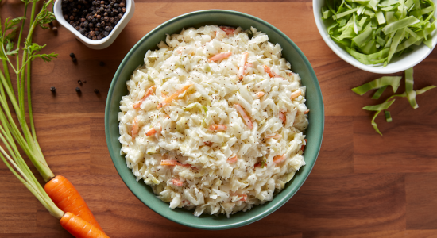

Amish Slaw

Description
I live in a wonderful Amish community and the ladies here are wonderful cooks. This is a lovely cole slaw recipe for those who like slaw without mayonnaise.
Ingredients
- 1 medium head cabbage, cored and shredded
- 1 medium onion, finely chopped
- 1 cup white sugar
- 1 cup vinegar
- 1 teaspoon salt
- 1 teaspoon celery seed
- 1 teaspoon white sugar
- 1 teaspoon prepared mustard
- ¾ cup vegetable oil
Steps
- In a large bowl, toss together the cabbage, onion, and 1 cup sugar. In a small saucepan, combine the vinegar, salt, celery seed, 1 teaspoon white sugar, mustard and oil. Bring to a boil, and cook for 3 minutes. Cool completely, then pour over cabbage mixture, and toss to coat. Refrigerate overnight for best flavor.